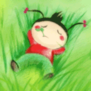

《永 不 分 手 的 恋 爱》 我想谈一次永不分手的恋爱
那场恋爱
我们都会长大
都会董事
都会成熟
但也会在只有彼此的时候幼稚一下
我想谈一次永不分手的恋爱
那场恋爱里
我们懂得彼此
熟悉彼此
习惯彼此
依赖彼此
我想谈一次永不分手的恋爱
我们的恋爱中
有一个自己的家
有一个我们的宝宝
我想谈一次永不分手的恋爱
我们会一直牵着彼此的手
陪着对方渡过每一天
快乐 忧伤
首先会想到对方
彼此的感情不会随着时间的流失而随波远流
我想谈一次永不分手的恋爱
我们会一直走下去
恩恩爱爱
快快乐乐
在夕阳西下
白头到老
然后轻抚着你的脸庞
轻声说
对你的感觉一直都在
我想谈一次永不分手的恋爱就算吵架
就算生气
就算分开
也会再在一起
我想谈一次永不分手的恋爱
就算我们很忙
就算我们很累
只要见到彼此就会温馨一笑
我想谈一次永不分手的恋爱
就算我们结婚
就算我们有孩子
就算我们在一起很久了
我也会想让我睡觉前抱你一会儿
我想谈一次永不分手的恋爱
在那场恋爱里
只有彼此
没有背叛
没有分离
没有心痛
【小故事*大道理】
《情况不同》
一只小猪、一只绵羊和一头乳牛，被关在同一个畜栏里。
有一次，牧人捉住小猪，他大声号叫，猛烈地抗拒。绵羊和乳牛讨厌它的号叫，便说：“他
常常捉我们，我们并不大呼小叫。”小猪听了回答道：“捉你们和捉我完全是两回事，他捉你们，
只是要你们的毛和乳汁，但是捉住我，却是要我的命呢! ”
立场不同、所处环境不同的人，很难了解对方的感受；因此对别人的失意、挫折、伤痛 ，不
宜幸灾乐祸，而应要有关怀、了解的心情。 要有宽容的心！
《靠自己》
小蜗牛问妈妈：为什么我们从生下来，就要背负这个又硬又重的壳呢？
妈妈：因为我们的身体没有骨骼的支撑，只能爬，又爬不快。所以要这个壳的保护！
小蜗牛：毛虫姊姊没有骨头，也爬不快，为什么她却不用背这个又硬又重的壳呢？
妈妈：因为毛虫姊姊能变成蝴蝶，天空会保护她啊。
小蜗牛：可是蚯蚓弟弟也没骨头爬不快，也不会变成蝴蝶他什么不背这个又硬又重的壳呢？
妈妈：因为蚯蚓弟弟会钻土, 大地会保护他啊。
小蜗牛哭了起来：我们好可怜，天空不保护，大地也不保护。
蜗牛妈妈安慰他：所以我们有壳啊！我们不靠天，也不靠地，我们靠自己。
《神迹》
法国一个偏僻的小镇，据传有一个特别灵验的水泉，常会出现神迹，可以医治各种疾病。有一
天，一个拄着拐杖，少了一条腿的退伍军人，一跛一跛的走过镇上的马路，旁边的镇民带着同情
的回吻说：“可怜的家伙，难道他要向上帝祈求再有一条腿吗?”这一句话被退伍的军人听到了，他
转过身对他们说：“我不是要向上帝祈求有一条新的腿，而是要祈求他帮助我，叫我没有一条腿后
，也知道如何过日子。”
试想：学习为所失去的感恩，也接纳失去的事实，不管人生的得与失，总是要让自已的生命充
满了亮丽与光彩，不再为过去掉泪，努力的活出自己的生命。
【好页推荐】
故事精选